应用层
应用层对应用程序的通信提供服务。
应用层的功能：
- 文件传输、访问和管理
- 电子邮件
SMTP/POP3 - 虚拟终端
- 查询服务和远程作业登录
协议：
FTP、SMTP、POP3、HTTP、DNS
一 网络应用模型
1.1 客户/服务器模型(Client/Server)
服务器：提供计算服务的设备。
- 永久提供服务
- 永久性访问地址/域名
客户机：请求计算服务的主机。
- 与服务器通信，使用服务器提供的服务
- 间歇性接入网络
- 可能使用动态/P地址
- 不与其他客户机直接通信
应用：Web，文件传输FTP，远程登录，电子邮件
1.2 P2P模型(Peer-to-peer)
- 不存在永远在线的服务器
- 每个主机既可以提供服务，也可以请求服务
- 任意端系统/节点之间可以直接通讯
- 节点间歇性接入网络
- 节点可能改变IP地址
- 可扩展性好
- 网络健壮性强
二 域名解析系统 DNS
DNS【Domain Name System】
域名：从右到左：www.hdu.edu.cn
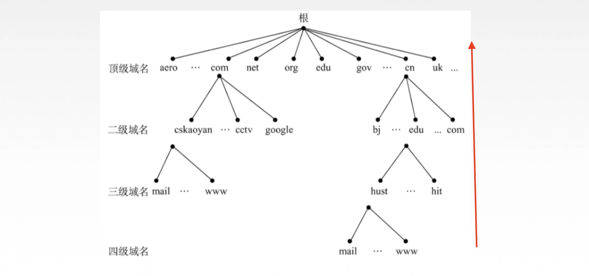
域名服务器：
- 本地域名服务器：当一个主机发出DNS查询请求时，这个查询请求报文就发给本地域名服务器。
- 根域名服务器（13个）
- 顶级域名服务器（管理该顶级域名服务器注册的所有二级域名）
- 权限域名服务器（负责一个区的域名服务器）
域名解析过程：
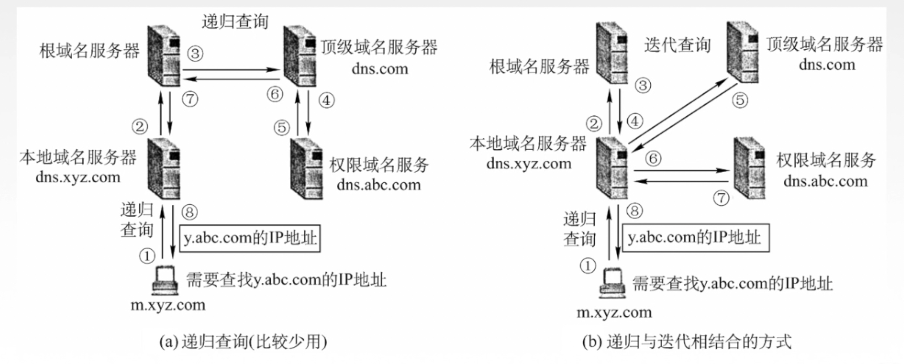
- 高速缓存：在主机/本地域名服务器存储访问过的IP地址以直接进行本地域名解析。（定期更新）
三 FTP协议
文件传输协议FTP【File Transfer Protocol】
提供不同种类主机系统（硬、软件体系等都可以不同）之间的文件传输能力。
- 番外：简单文件传送协议TFTP 【Trivial File Transfer Protocol】
FTP是基于客户/服务器（C/S）的协议。用户通过一个客户机程序连接至在远程计算机上运行的服务器程序。
依照FTP协议提供服务，进行文件传送的计算机就是 FTP服务器。
连接FTP服务器，遵循FTP协议与服务器传送文件的电脑就是FTP客户端。
3.1 FTP工作原理
登陆：
- ftp地址 + 用户名&密码
- ftp地址 + 匿名登陆
匿名登陆：
互连网中有很大一部分 FTP 服务器被称为“匿名”(Anonymous）FTP服务器。这类服务器的目的是向公众提供文件拷贝服务，不要求用户事先在该服务器进行登记注册，也不用取得FTP服务器的授权。
Anonymous（匿名文件传输）能够使用户与远程主机建立连接并以匿名身份从远程主机上拷贝文件，而不必是该远程主机的注册用户。用户使用特殊的用户名anonymous登陆FTP服务，就可访问远程主机上公开的文件。
FTP使用TCP实现可靠传输。
服务器进程：1个主进程 + m个从属进程
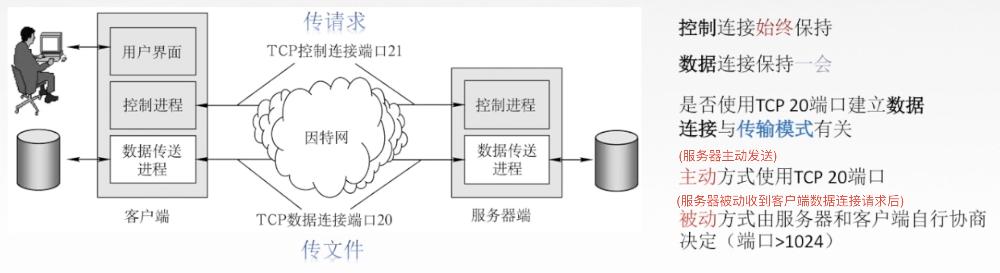
FTP传输模式：
- 文本模式：ASCI模式，以文本序列传输数据；
- 二进制模式：Binary模式，以二进制序列传输数据。
四 电子邮件
电子邮件的信息格式：信封 + 内容（首部、主体）
4.1 组成结构
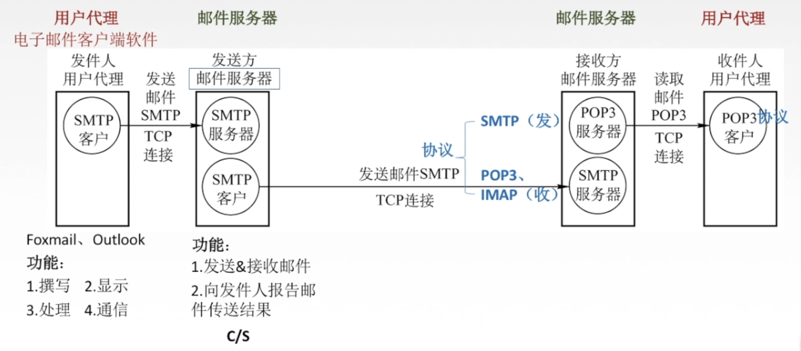
4.2 SMTP协议
简单邮件传输协议【Simple Mail Transfer Protocol】
SMTP规定了在两个相互通信的SMTP进程之间应如何交换信息。
负责发送邮件的SMTP进程就是SMTP客户，负责接收邮件的进程就是SMTP服务器。
SMTP规定了14条命令（几个字母）和21种应答信息（三位数字代码+简单文字说明）。
TCP连接、端口号25、C/S模式
通信过程：连接建立 => 邮件传送 => 连接释放
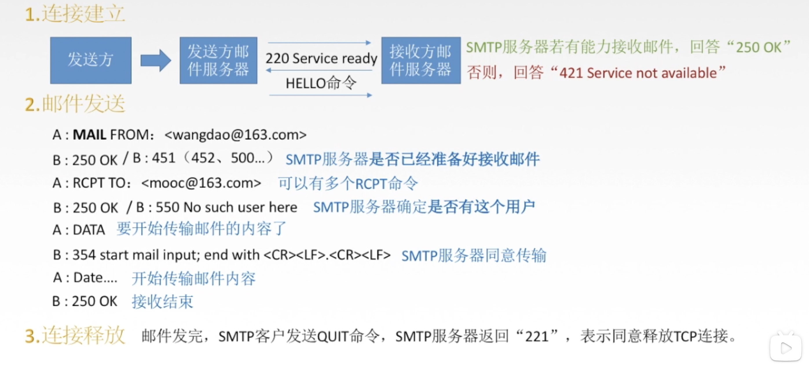
4.2.1 MIME类型
SMTP的缺点：
- SMTP不能传送可执行文件或者其他二进制对象。
- SMTP仅限于传送7位ASCI码，不能传送其他非英语国家的文字。
- SMTP服务器会拒绝超过一定长度的邮件。
多用途互联网邮件扩展类型【Multipurpose Internet Mail Extensions】
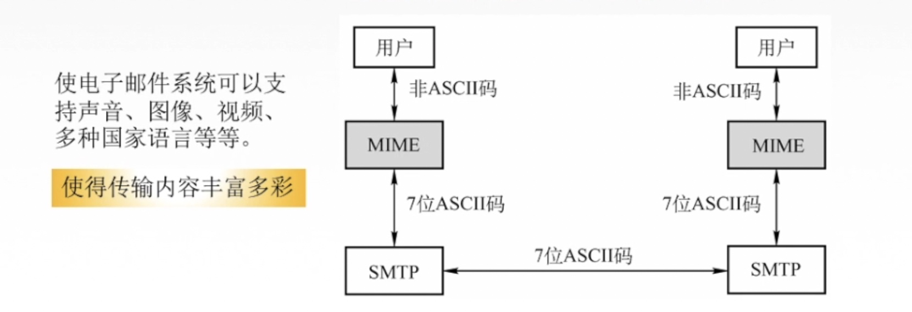
4.3 POP3协议
邮局协议【Post Office Protocol - Version 3】
主要用于支持使用客户端远程管理在服务器上的电子邮件
TCP连接、端口号110、C/S模式
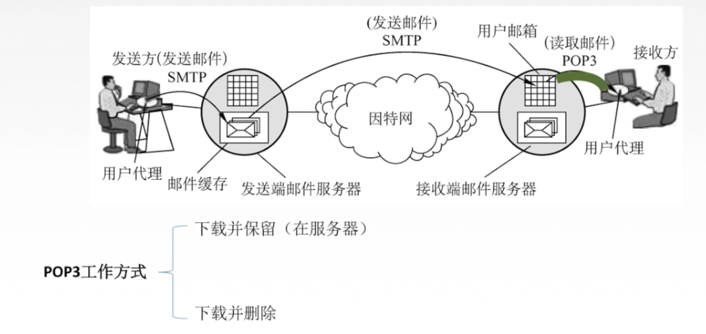
4.4 IMAP协议
因特网信息访问协议【Internet Message Access Protocol】 类似POP3协议
IMAP协议比POP协议复杂。当用户PC上的IMAP客户程序打开IMAP服务器的邮箱时，用户可以看到邮箱的首部，若用户需要打开某个邮件，该邮件才上传到用户的计算机上。
IMAP可以让用户在不同的地方使用不同的计算机随时上网阅读处理邮件，还允许只读取邮件中的某一个部分（先看正文，有WiFi的时候再下载附件）
4.5 基于万维网的电子邮件
方便
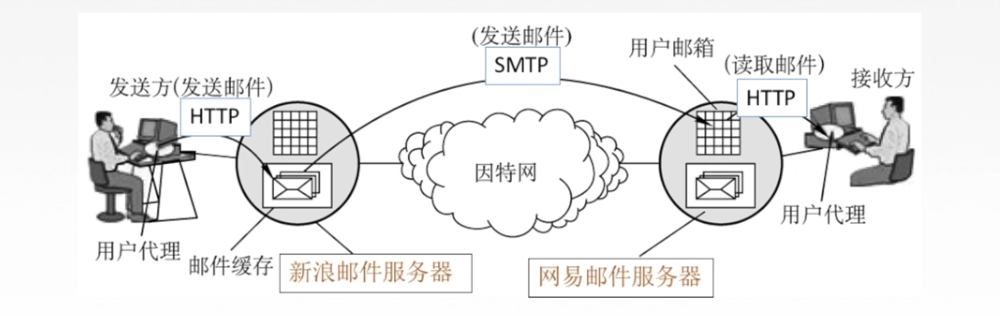
五 万维网
万维网WWW【World Wide Web】
是一个大规模的、联机式的信息储藏所/资料空间，是无数个网络站点和网页的集合。
万维网以客户/服务器方式工作，用户使用的浏览器就是万维网客户程序，万维网文档所驻留的主机运行服务器程序。
5.1 统一资源定位符 URL
URL【Uniform Resource Locator】：
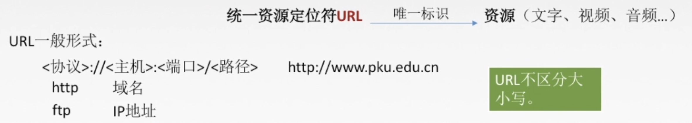
用户通过点击超链接(http://www.baidu.com)获取资源，这些资源通过超文本传输协议HTTP传送给使用者。
万维网使用超文本标记语言HTML，使得万维网页面设计者可以很方便地从一个界面的链接转到另一个界面，并能够在自己的屏幕上显示出来。
5.2 HTTP协议
超文本传输协议【HyperText Transfer Protocol】
HTTP协议定义了浏览器（万维网客户进程）怎样向万维网服务器请求万维网文档，以及服务器怎样把文档传送给浏览器。
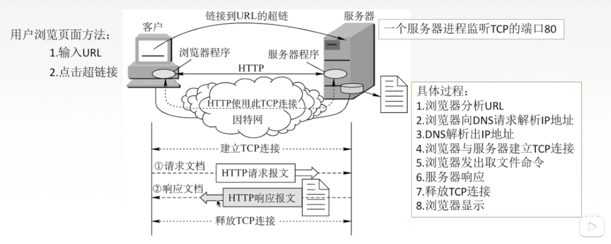
特点：
- HTTP协议是无状态的。
纪录状态：Cookie是存储在用户主机中的文本文件，记录一段时间内某用户的访问记录。 - HTTP采用
TCP作为运输层协议，但HTTP协议本身是无连接的（通信双方在交换HTTP报文之前不需要先建立HTTP连接）。
5.2.1 HTTP连接方式
- 非持久连接(Close)
- 持久连接(Keep-alive)：非流水线/流水线
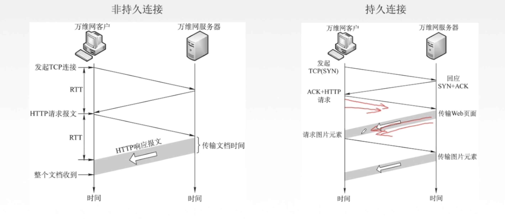
5.2.2 HTTP报文结构
HTTP报文是面向文本的，因此在报文中的每一个字段都是一些ASCI码串。
- 请求报文
- 响应报文
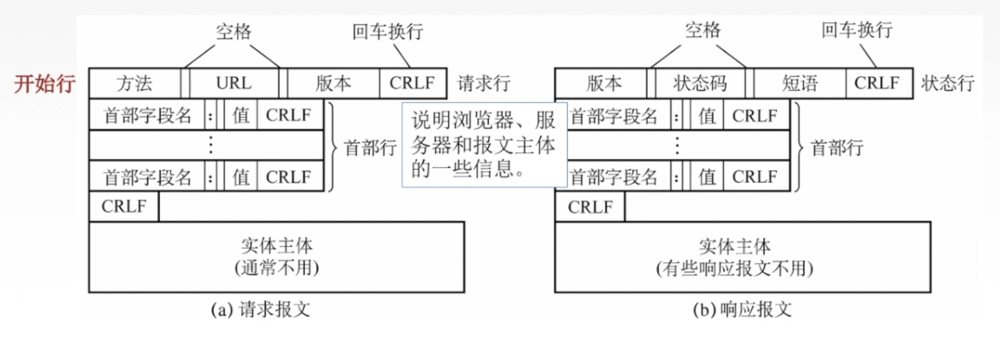
响应报文状态码：
1xx 表示通知信息的，如请求收到了或正在处理。
2xx 表示成功，如接受或知道了。202 Accepted
3xx 表示重定向，如要完成请求还必须采取进一步的行动。301 Moved Permanently
4xx 表示客户的差错，如请求中有错误的语法或不能完成。404 Not Found
5xx 表示服务器的差错，如服务器失效无法完成请求。
END
🔚学无止境